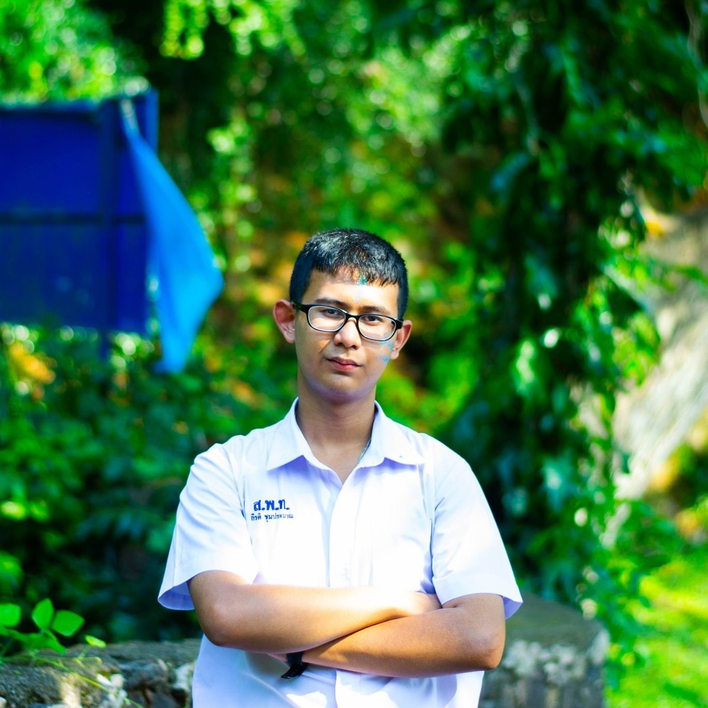

จุดประสงค์ของเว็บไซต์
เว็บไซต์นี้สร้างขึ้นโดย นายกีรติ ชุมประมาณ เพื่อใช้ประกอบการสมัครเข้าร่วมค่ายเยาวชนคนดูดาวและแลกเปลี่ยนวัฒนธรรม ปีที่ 13 ณ อุทยานดาราศาสตร์สิรินธร และอุทยานแห่งชาติดอยอินทนนท์ จังหวัดเชียงใหม่ ระหว่างวันที่ 19 พฤศจิกายน 2563 ถึงวันที่ 22 พฤศจิกายน 2563
แนะนำตัวเอง

Name : กีรติ ชุมประมาณ - Kirati Chumpraman
Nickname : หยก - Yok
Studying : มัธยมศึกษาปีที่ 5 - Mattayom 5
School : โรงเรียนสตรีพัทลุง - Satri Phatthalung School
Address : อำเภอเมืองพัทลุง จังหวัดพัทลุง - Mueang Phatthalung, Phatthalung
Telephone number : 093-7600351
Facebook : Yok Yok Chumpraman
Instagram : _yok_eiei
Gmail : kiratichumpraman@gmail.com